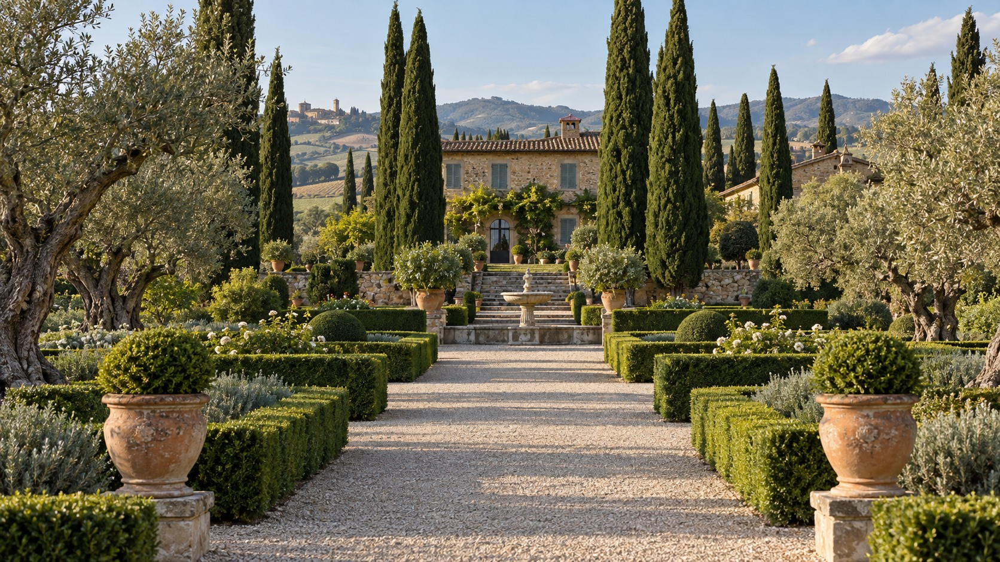
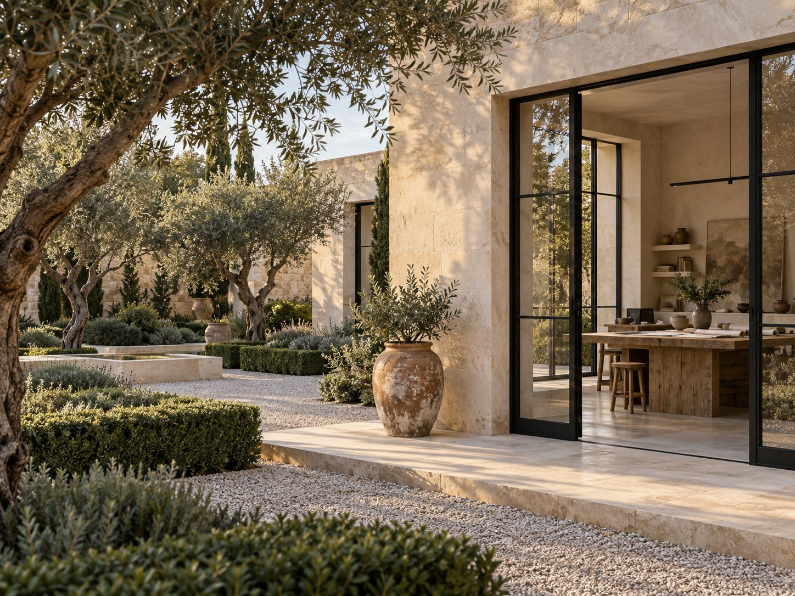
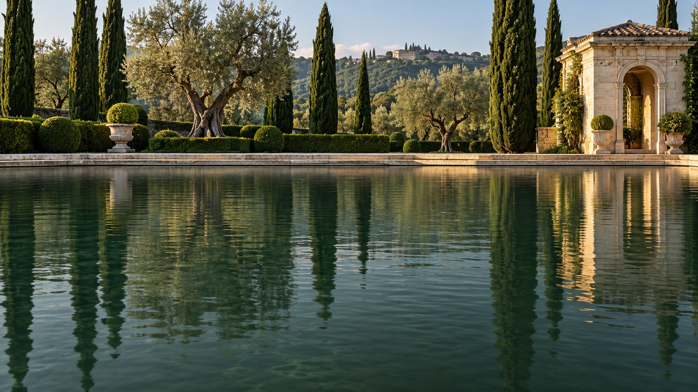
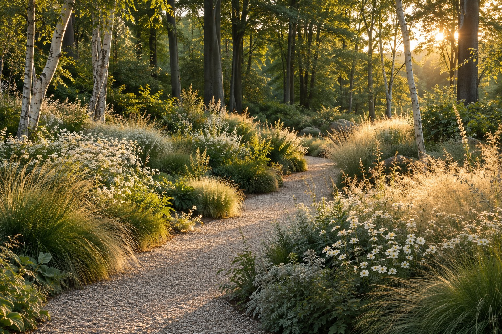

KONCEPCJA OGRODU
Spójny pomysł na przestrzeń, jej atmosferę i relację z domem.
IDEA · KOMPOZYCJA
MIEJSCA TWORZONE Z UWAŻNOŚCIĄ

Spójny pomysł na przestrzeń, jej atmosferę i relację z domem.
IDEA · KOMPOZYCJAUkład ogrodu, nawierzchnie i detale przygotowane do realizacji.
FUNKCJA · DETALNasadzenia i faktury dobrane do miejsca oraz jego pór roku.
ZIELEŃ · FAKTURYUważność na etapie wykonania — od pierwszych prac po ostatnie nasadzenia.
SPÓJNOŚĆ · JAKOŚĆ
PRZESTRZEŃ NA CODZIENNOŚĆ
NASZE PODEJŚCIE
Ciebie, miejsca i jego codzienności.
Przestrzeń, proporcje i to, co najważniejsze.
Ogrodom, które dojrzewają z czasem.
WARTO WIEDZIEĆ
Już na etapie projektu domu lub planowania zmian na działce. Wspólne myślenie o architekturze i ogrodzie pozwala lepiej połączyć wnętrze z otoczeniem. Istniejący ogród również może być dobrym początkiem.
Zdjęcia miejsca, przybliżoną powierzchnię, plan działki, jeśli go masz, i kilka słów o swoich potrzebach. Inspiracje są pomocne, ale równie ważne jest to, jak chcesz spędzać czas na zewnątrz.
Projektujemy kompozycje, które mają coś do zaoferowania w każdej porze roku. Zimowa struktura drzew, zieleń krzewów, kwitnienie i jesienne faktury tworzą różne odsłony tego samego miejsca.
MATERIAŁ, ŚWIATŁO, CZAS
Wybieramy to, co z czasem staje się jeszcze ciekawsze. Ogród ma dobrze wyglądać dzisiaj i równie dobrze żyć za kilka lat.

BLISKO NATURY. BLISKO CIEBIE.
Kilka słów o Tobie i miejscu, które chcesz zmienić.